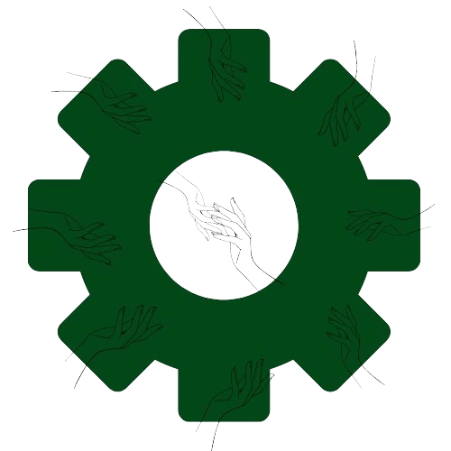

01
Frontend
engineering
Interfaces that load fast, stay accessible and hold up as the product grows.
React · Next.js · Astro · TypeScript
Independent software engineer building fast, careful web products, from the database to the last pixel.
Scroll
Chapter I
Off the keyboard: climbing, film cameras, mechanical keyboards and long Sunday runs.
Hi, I’m Priyanshu. I’m a software engineer with ten years of experience building web products, APIs and developer tools that are fast, accessible and easy to change.
“Readable code is a kindness
to the next developer.”

Chapter II
❋ Each project opens a full case study
Start readingChapter III
Building software with clarity, speed and care.
01
Interfaces that load fast, stay accessible and hold up as the product grows.
React · Next.js · Astro · TypeScript
02
Typed, documented services with data models that still make sense a year later.
Go · Node.js · Python · PostgreSQL
03
Audits and fixes for slow or hard-to-use products, from Core Web Vitals to screen readers.
Lighthouse · axe · WCAG 2.2
04
CI pipelines, containers and edge deploys, so shipping on a Friday is uneventful.
Docker · GitHub Actions · Cloudflare · AWS
Chapter IV
Teams, products and
clients since 2016.
Chapter V